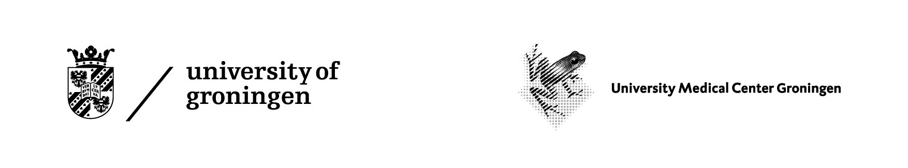
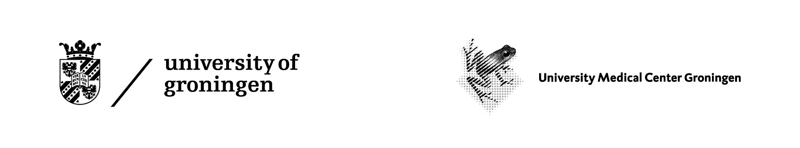

The eQTLGen Consortium has been set up to investigate the genetic architecture of blood gene expression and to understand the genetic underpinnings of complex traits.
Aims
The aims of our consortium are:
- Facilitate the collaboration and data harmonization between different blood eQTL cohorts.
- To take advantage of the high power of consortium and identify weak genetic effects on blood gene expression.
- Provide a framework where consortium members and external collaborators can pursue their specific scientific interests and to propose side-projects.
- In the form of summary statistics, provide the scientific community a valuable resource which can be used for interpretation of genome-wide association studies (GWAS), for the development of novel methods and for other scientific projects.
- Integrate our results with other QTL consortia, in order to cross-validate the findings and better entangle the molecular mechanisms leading to the formation of complex traits.
Active projects
❗Currently we are working on the eQTLGen phase II analyses: highly-powered genome-wide eQTL meta-analysis in blood. This project dramatically expands our previous work where we tested, in addition to cis-eQTLs, trans-eQTLs for a limited subset of ~10,000 trait-associated SNPs. We plan to conduct such genome-wide meta-analysis on as many blood-based cohorts as possible.
Resulting genome-wide association profiles on gene expression would enable to address many relevant scientific questions. Most simple example: with such data, you can interpret your GWAS locus by finding potentially relevant genes from all over the genome, not only in the near vicinity of trait-associated locus.
Therefore, if you have blood-based eQTL cohort, please consider joining our effort! Please find the details and analysis cookbook from here.
If you know any blood-based eQTL cohort not yet joined our consortium, please drop us a line with the reference and/or contact.
Previous work
Previously we have conducted cis-eQTL, targeted trans-eQTL and eQTS analysis in up to 31,684 blood and PBMC samples from 37 individual cohorts from eQTLGen Consortium (eQTLGen phase I). In this project, we tested the subset of ~10,000 trait-related variants for the associations with the expression of distal genes (trans).
Publication:
Full summary statistics from eQTLGen phase I are available on
the dedicated web site.
Results from this project have been extensively used in collaboration projects before and after publication. According to Google Scholar, the published paper has been cited 100 times and preprint 401 times (16.06.2022).
Data
Links to all available summary statistics from our publications and preprints are under Resources
Administration
eQTLGen Consortium is jointly coordinated by:
University of Tartu, Institute of Genomics, Estonian Genome Center (Urmo Võsa, PI: Prof. Tõnu Esko)
University Medical Center Groningen, University of Groningen (Robert Warmerdam, PI: Prof. Lude Franke)
 
